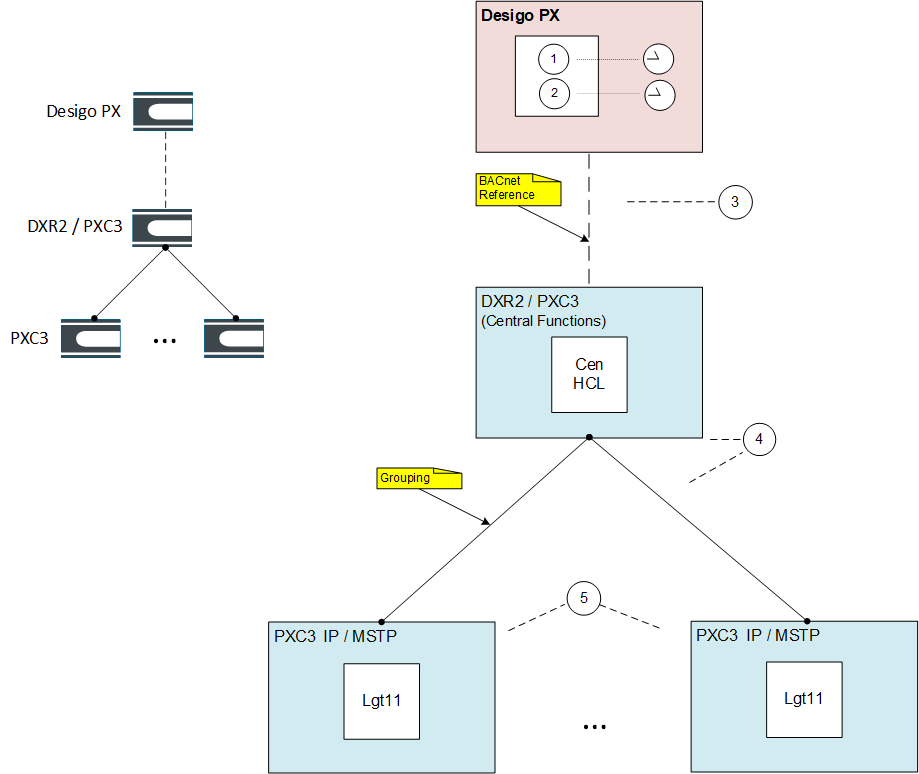
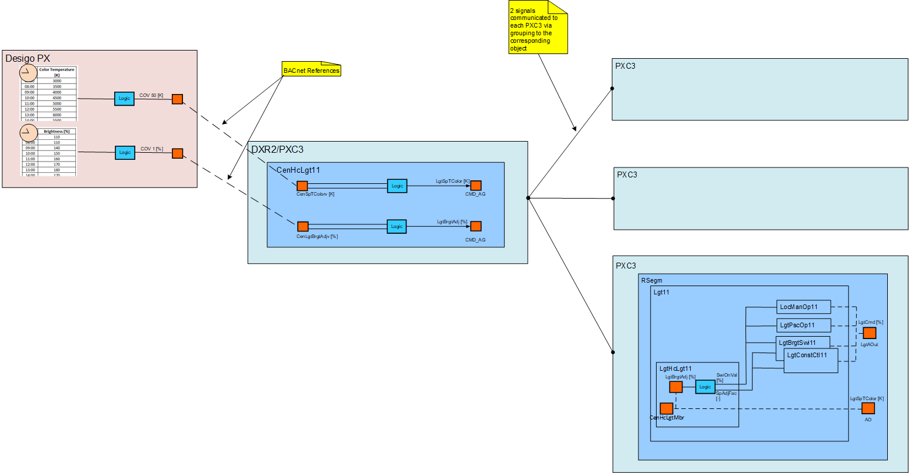

以人为本的照明拓扑
Human-Centric Lighting (HCL) topology

Key
1, 2 | 用于色温、亮度调整和平滑过渡的相关渐变功能的调度程序位于 Desigo PX 自动化站中。 |
3 | The Desigo PX feeds the HCL central function (from CenFnct11) to the DXR2/PXC3 central function automation station via a BACnet reference. |
4 | DXR2/PXC3 中的 HCL 中央功能通过分组与 PXC3 自动化站上的 DRA 房间照明应用程序进行通信。 |
5 | 适应的房间照明应用通过 DALI 设备类型 8 支持 HCL。 |
总体设计：

请参阅以下部分，了解以人为本的照明的房间照明调整示例。